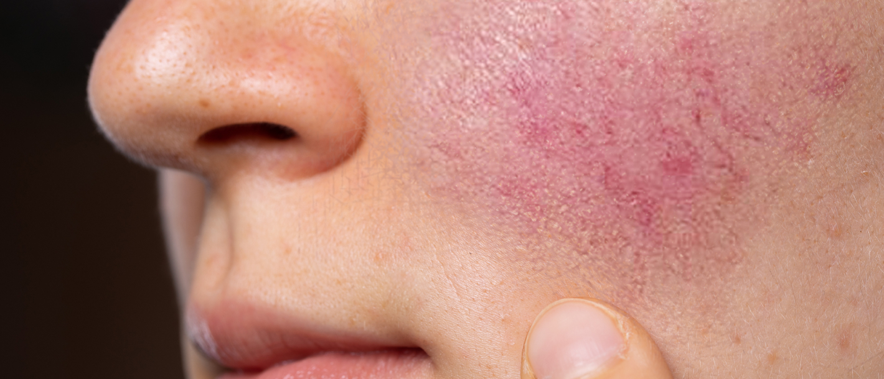
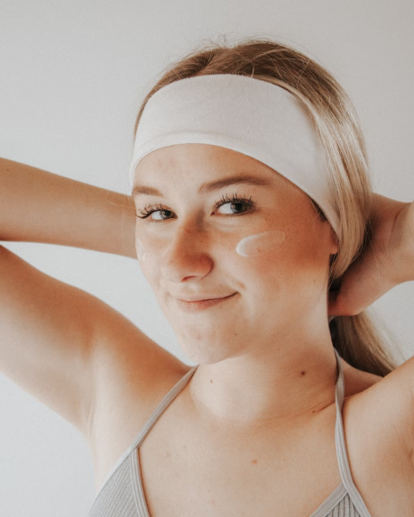

Что такое розацеа?

17.01.2022

1 032

5 мин

Розацеа – хронический воспалительный дерматоз, характеризующийся поражением кожи лица в виде эритемы и папуло-пустулезных элементов. Обычно розацеа локализуется на щеках и в Т-зоне.
Среди причин появления выделяют:
- Сосудистые нарушения;
- Изменения в соединительной ткани дермы. Нарушение барьерной функции кожи;
- Микроорганизмы. Научно доказано, что пылевой клещ семейства Demodex выделяет бактерию, которая служит возбудителем заболевания;
- Дисфункция пищеварительного тракта, а также чрезмерное употребление горячей и острой пищи, а также алкоголя;
- Иммунные нарушения и нарушения гормонального равновесия;
- Изменения сально-волосяного аппарата;
- Стресс;
- Климатические факторы и длительное воздействие высоких температур (например, производственные и металлургические цеха, профессиональные занятия спортом);
- Психовегетативные расстройства.
Подтипы розацеа
Посмотрите, какие средства нужны каждой девушке с чувствительной кожей, склонной к покраснениям.
Заглянуть в ванную
Лечение розацеа
Для успешного леченияе розацеа рекомендуется наблюдение у нескольких специалистов: дерматолога, эндокринолога, терапевта, гастроэнтеролога.
Также важно лечить сопутствующие заболевания эндокринной системы и ЖКТ.
Розацеа является хроническим заболеванием, и избавиться от него навсегда, к сожалению, невозможно.
Целью терапии является максимально полная ремиссия дерматоза.
Поэтому успешным лечением можно считать стойкие периоды ремиссии, смягчение симптомов и минимизация косметических дефектов.
Лечение, как правило, наружное. В редких исключениях требуется хирургическое вмешательство.
Рекомендации тем, кто столкнулся с розацеа:

- Бережно ухаживайте за кожей и используйте специализированные средства для чувствительной кожи;
- Избегайте провоцирующих факторов – воздействия низких и высоких температур, алкоголя, острой пищи и эмоционального напряжения;
- После лечения выполняйте поддерживающую терапию;
- При правильной терапии и уходе за кожей можно добиться хороших результатов и стойкой ремиссии. Читайте больше информации в нашей статье «3 секрета успешного лечения розацеа»;

Информация проверена экспертом
Профессор Матушевская Е.В.
автор книги «Акне и розацеа», ГЭОТАР - Медиа, 2019г.
Литература:
- Чеботарев В.В., Чеботарева Н.В., Асхаков М.С., Бронникова Е.В. Чувствительная кожа: причины, методы терапии. Научная статья по специальности «Фундаментальная медицина» // Медицинский вестник Северного Кавказа. – 2015. г
- Рахматуллина Н.М., Гарифуллина Г.З., Сибгатуллина Н.А., Ахметзянова Д.Г., Закирова Г.Н., Трофимова О.Н. Розацеа. Научная статья по специальности «кКлиническая медицина» // Медицинский вестник Башкортостана. – 2017.
- Клинические рекомендации Российского общества дерматовенерологов и косметологов, 2020.
- Матушевская Е., Свирщевская Е. «Акне и розацеа» // ГЭОТАР-Медиа, 2019.